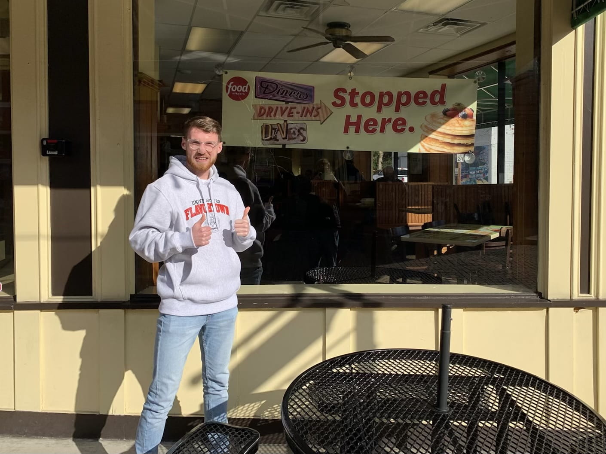

Hello there, I'm Alexander Grattan
Introduce Yourself
Hi there! I'm Alexander Grattan, a Digital Narrative and Interactive Design major with a CS minor here at Pitt. I used to be a film student before transferring to Pitt (you can call me a bit of a film buff). I love watching the Premier League, editing videos, and making weird websites. And you know what else I love? Cookies. 🍪
Field of Study
As part of the DNID major, I exercise both sides of my brain, creating both technological and narrative experiences. Some of the things I'm interested in studying within this field include web development, accessibility, and human-computer interaction.
Why UX Design and Usability Testing?
"You are not the user" - someone smart
No one should be left behind when it comes to having access to usable and safe technology. I want to create creative and fun experiences that all can enjoy and usability testing is an important skillset to have in order to do so.
Where do you want your knowledge and skills to take you?
I'm currently working for a digital design agency, however, I might look to further my education and study HCI at Carnegie Mellon University, delving into research into web accessibility. What I hope to gain from this class is the skills to analyze the usability of an interface as well as how to adaquately conduct research and interview participants.